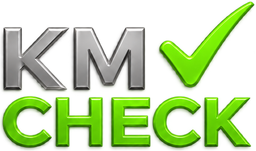
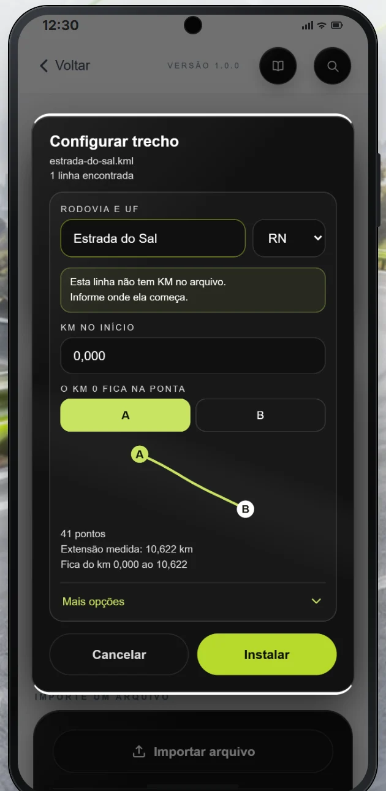
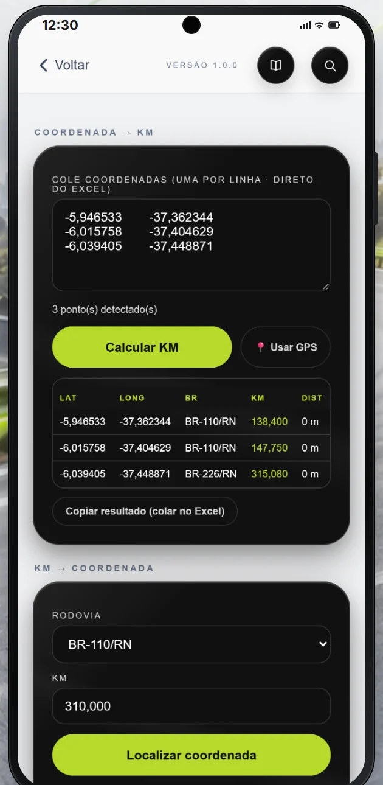
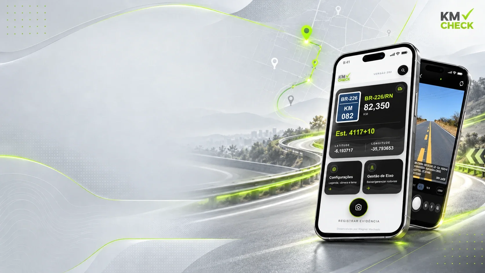

Foto 1:1, 4:3 ou 16:9 com legenda gravada.
Painel grande do KM, que escurece à noite.
Qualquer rodovia: federal, estadual ou municipal.
Coordenada em KM e KM em coordenada.
Baixe do SNV ou importe o seu traçado


Baixe o app
